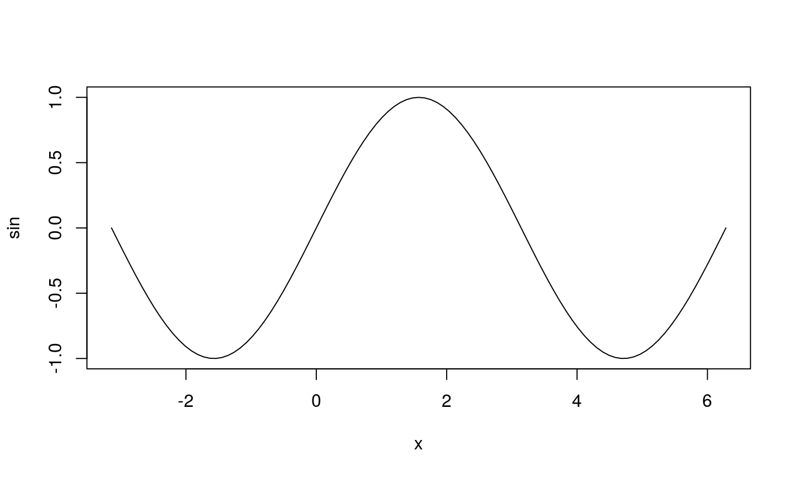

Outline
Que es
reproducible research
y para que?
Sobrevuelo historico
knitr y rmarkdown
Otras herramientas
Prueba
plot(sin, -pi, 2*pi)

knitr & rmarkdown
Primero lo primero:
install.packages(c("knitr", "rmarkdown"))